Primer
Designing the digital products behind a growing school network
During a three-year partnership, I led UX & Product Design across Primer's products for students, teachers, parents, and internal teams. I partnered with product, engineering, and education leadership to design cohesive experiences across web, native iOS and Android, and large-screen classroom interfaces while establishing a shared design system that accelerated product development as the company scaled from approximately 40 to more than 1,200 students across 17 campuses in three U.S. states.
Oct 2023 – Jun 2026
Engagement
~40
1,200+
Students supported
1
17
Campuses supported
4
Distinct user groups
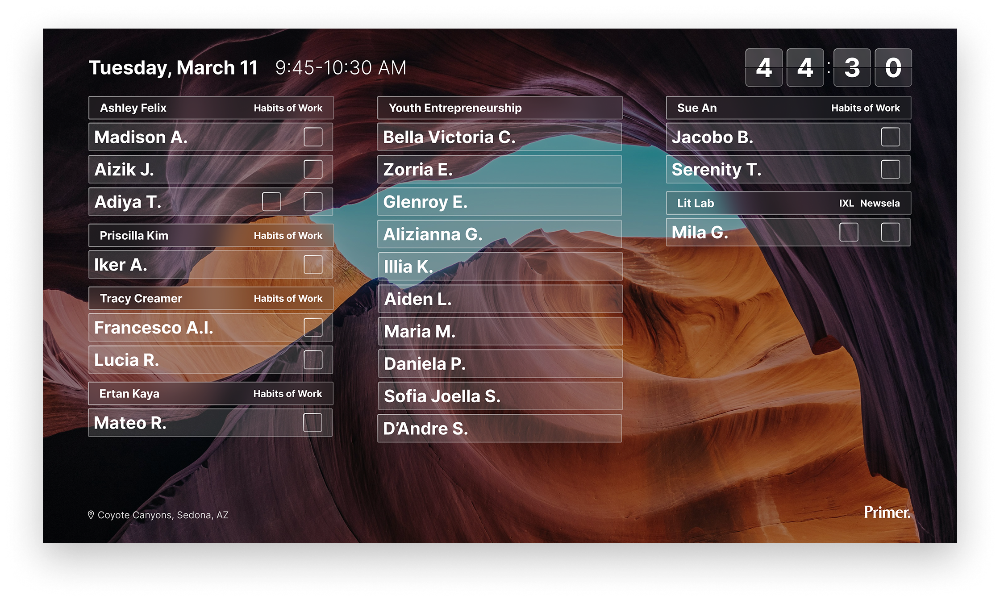
I designed the screen Primer classrooms use during the school day: a live status board showing every student's current class and progress, readable from across the room. The countdown and full-bleed photography keep it feeling like part of the space, not a dashboard bolted onto the wall.
Teachers lacked a clear view of how students were progressing throughout the day. Information was fragmented across Slack, attendance tools, and learning software, making it difficult to quickly identify which students needed attention and where to focus their time.
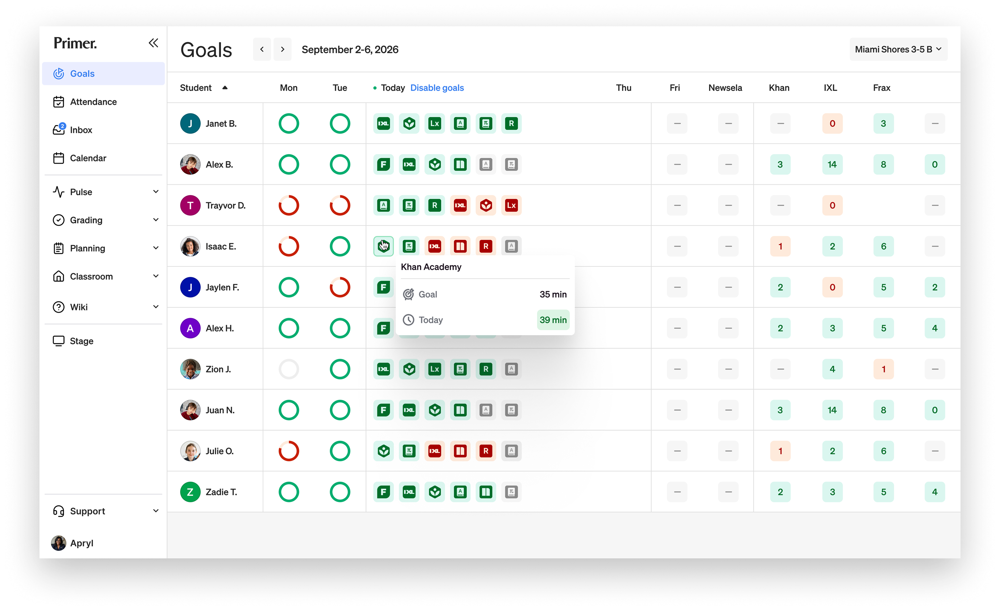
I designed a connected set of teacher tools that brought daily goals, academic progress, grading, planning, and classroom management into a single workflow. At the center was a daily and weekly goals dashboard that gave teachers an immediate view of every student's progress, making it easy to identify who needed support and drill into learning activity across the curriculum.
By bringing these workflows together, teachers could spend less time navigating disconnected systems and more time supporting students in the classroom.
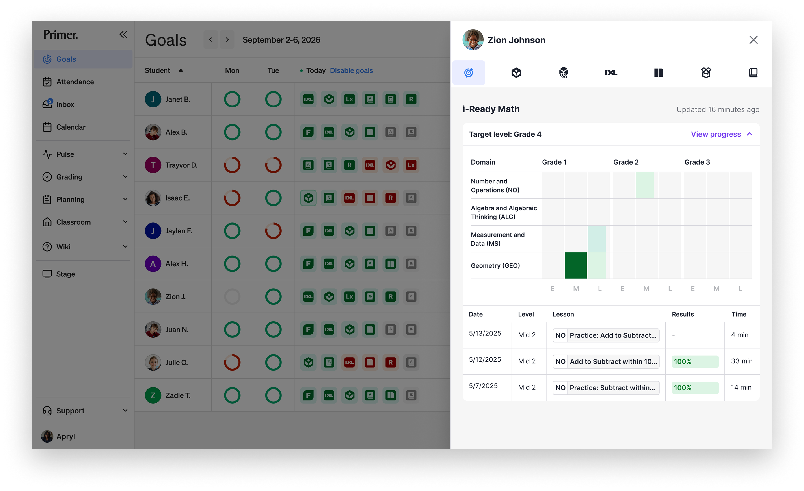
Students often didn't know what they were supposed to be doing or where they needed to be next. Without a clear way to navigate their day, students frequently relied on teachers for direction, creating unnecessary friction throughout the classroom.
I redesigned the student experience around a simple question: What do I need to do right now? Rather than exposing every option at once, the product focused students on their current class and immediate priorities, while still making upcoming activities and longer-term goals visible. Daily schedules, assignments, learning goals, and academic progress were brought together into a single experience that helped students navigate their day independently.
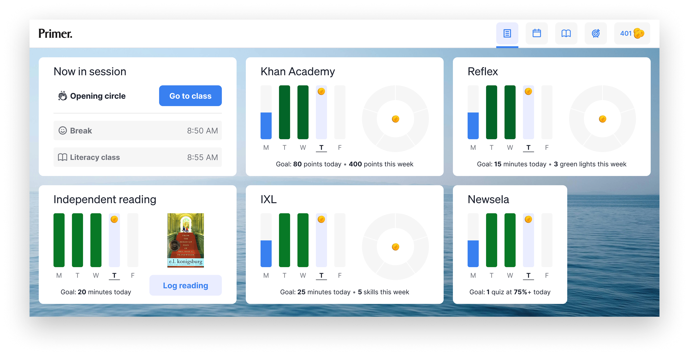
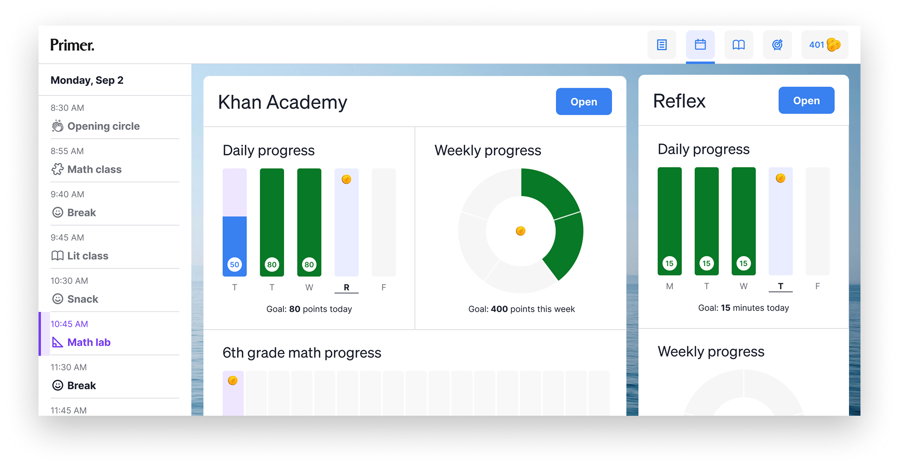
Beyond helping students stay on track, I designed a goal system that made progress visible across learning platforms like Khan Academy, IXL, and independent reading. Students could see daily and weekly progress toward their goals while earning rewards that reinforced positive learning habits without distracting from the work itself.
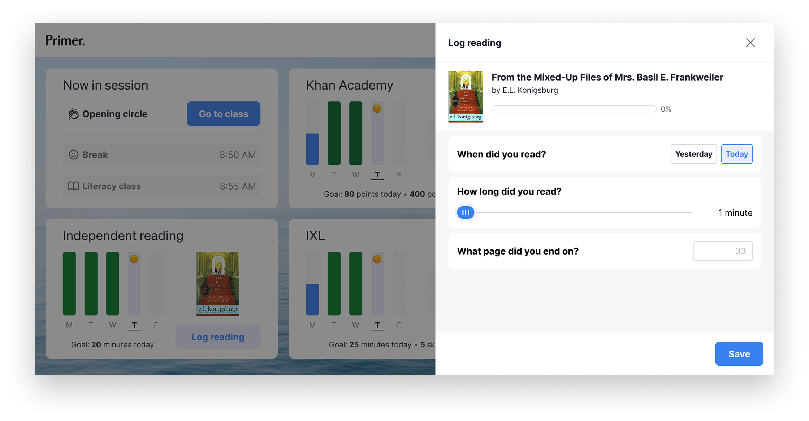
Primer's instructional model combines in-person learning with live virtual instruction, but traditional video conferencing tools, like Zoom, weren't designed for the needs of a classroom. Teachers needed better ways to support students, facilitate small-group instruction, and move naturally between individual and collaborative learning.
I designed Prism, a purpose built digital classroom that replaced Zoom with an experience tailored to Primer's teaching model. The product supported small group learning, one-on-one teacher support, screen sharing, and classroom management in a single environment designed specifically for K–8 education.
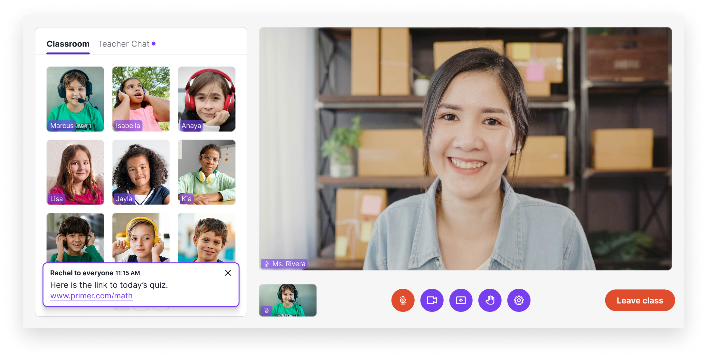
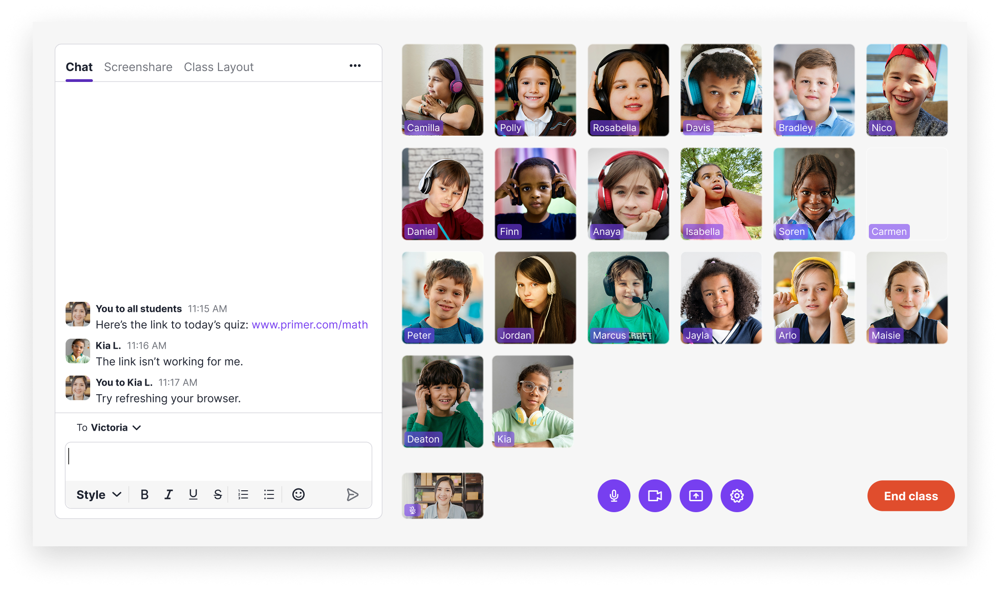
Beyond creating a better learning experience, Prism reduced software licensing costs while giving Primer a digital classroom that could evolve alongside its educational model.
Enrolling a child at Primer involves far more than completing a form. Parents move through admissions interviews, learning profiles, tuition determination, and enrollment documents, making it essential that the process feel personal rather than bureaucratic.
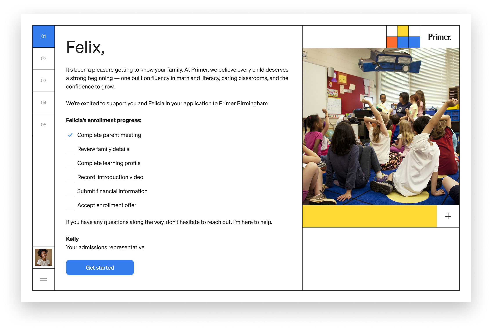
Before I redesigned the experience, admissions representatives spent significant time following up with families to collect documents and complete missing information. I designed a fully self-service enrollment experience that guided parents through each step while preserving the personal relationship with their admissions representative throughout the journey.
Parents could complete family information, learning profiles, financial details, enrollment agreements, and payments through a single responsive experience. By automating information collection and providing clear progress throughout the process, admissions representatives could spend less time chasing paperwork and more time helping families make informed enrollment decisions.
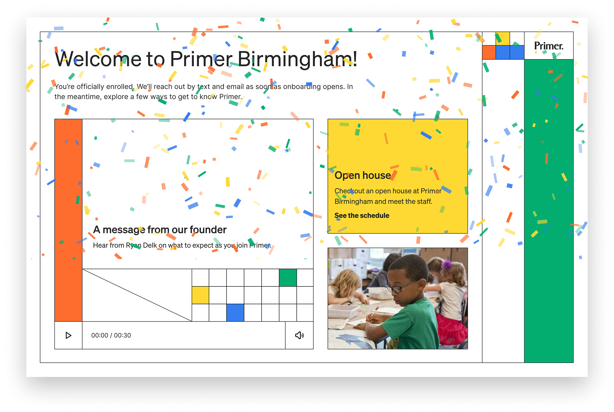
Parents struggled to stay connected to their child's day through the mobile web experience. To create a simpler and more engaging experience, I designed a native iOS and Android app that became the primary touchpoint between parents and the school.
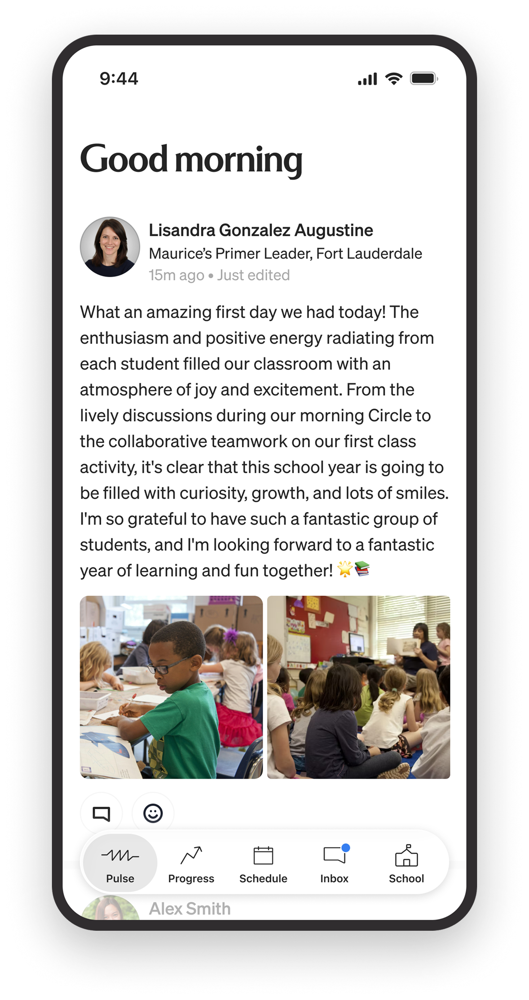
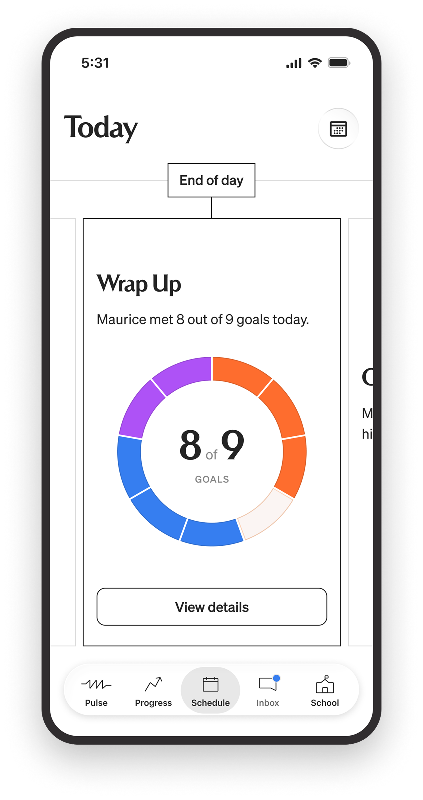
The app brought together classroom updates, real-time schedules, learning progress, direct messaging with teachers and support staff, and enrollment information into a single experience. Rather than piecing together information from multiple sources, parents always had a clear understanding of what their child was doing and how they were progressing.
By giving families greater visibility into the school day, the app increased overall parent satisfaction and became the primary way parents stayed informed and connected.
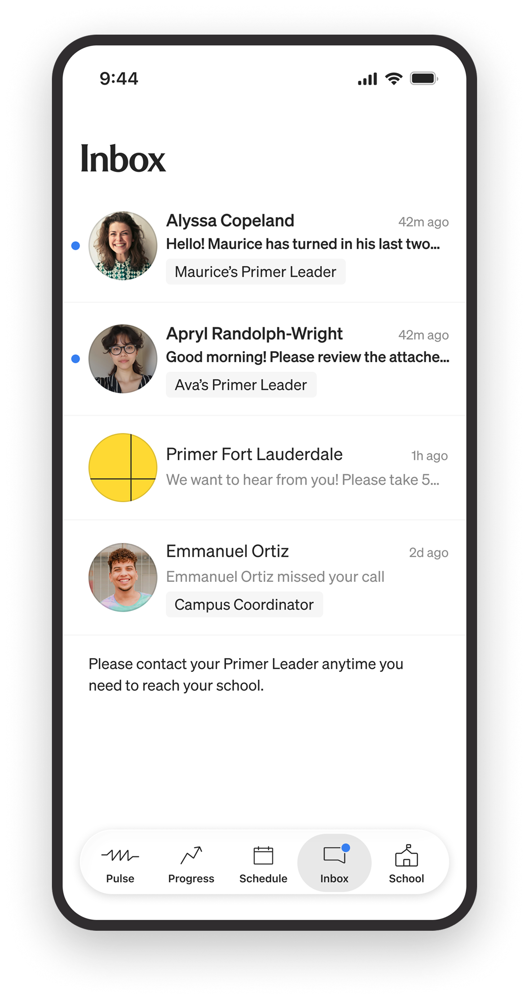
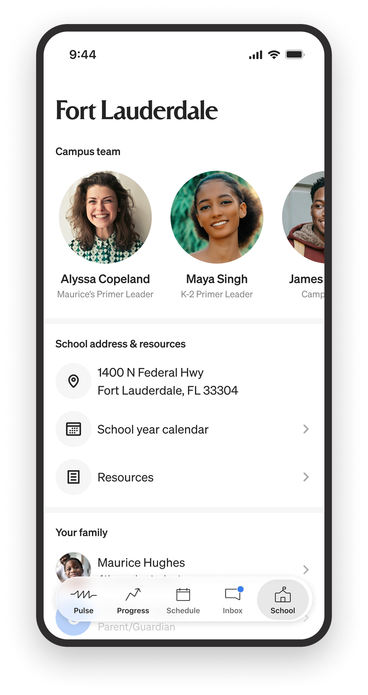
Primer wasn't a single product. It was a connected platform supporting students, teachers, parents, and internal operations across web, native mobile, and classroom experiences.
Over the course of a three-year partnership, I led UX & Product Design across that platform, helping establish a shared design language, improve operational workflows, and create products that could evolve alongside the organization as it grew from one campus serving approximately 40 students to 17 campuses serving more than 1,200 students.
The most rewarding part of this work wasn't designing individual products—it was creating a connected platform that helped teachers teach, students learn, parents stay informed, and the organization scale.